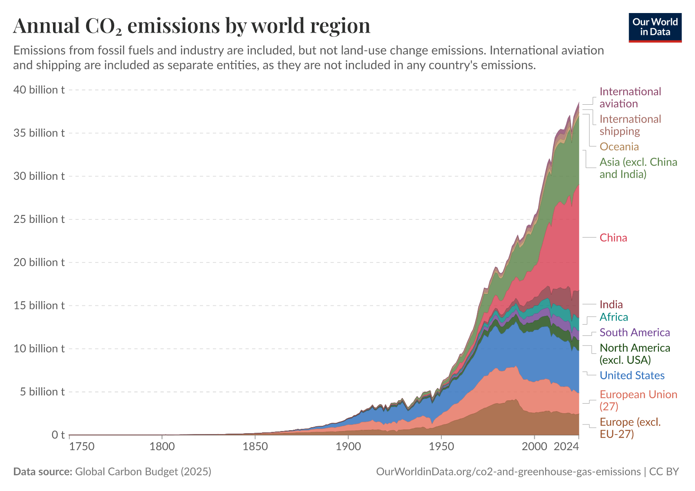
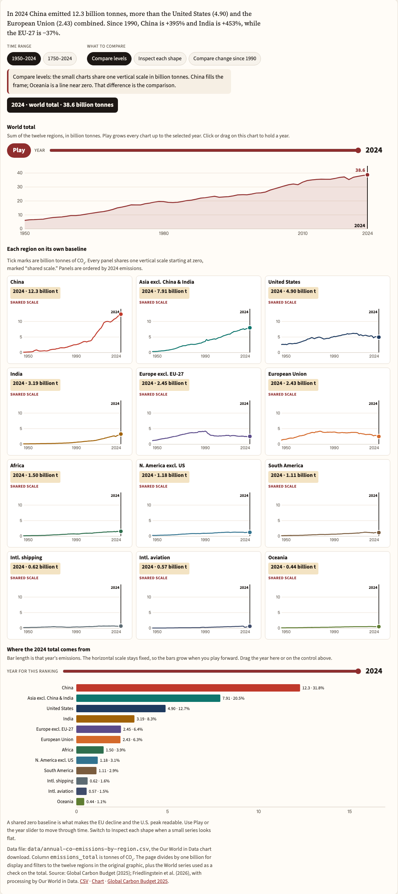

Visualization Critique and Redesign
A critique of Our World in Data’s stacked area chart of annual CO₂ emissions by world region, and a D3.js redesign that makes each region’s trajectory readable.
Original visualization
Annual CO₂ emissions by world region. Published by Our World in Data. The chart is a stacked area of annual carbon dioxide emissions from 1750 to 2024. Fossil fuels and industry are included; land-use change is not. International aviation and shipping are separate series, because they are not included in any country’s emissions.
The data are annual totals in tonnes. This page loads the chart’s CSV and keeps the twelve regions drawn in the original. Those regions do not overlap, and in 2024 they sum to the world total of 38.6 billion tonnes. The underlying inventory is the Global Carbon Budget (2025), processed by Our World in Data.

Redesigned visualization
Loading the emissions data…
Move across a chart to choose a year. The year stays in place when you scroll.
World total
Sum of the twelve regions, in billion tonnes. Play grows every chart up to the selected year. Click or drag on this chart to hold a year.
Each region on its own baseline
Where the 2024 total comes from
Bar length is that year’s emissions. The horizontal scale stays fixed, so the bars grow when you play forward. Drag the year here or on the control above.
Data file: data/annual-co-emissions-by-region.csv, the Our World in Data chart download. Column emissions_total is tonnes of CO₂. The page divides by one billion for display and filters to the twelve regions in the original graphic, plus the World series used as a check on the total. Source: Global Carbon Budget (2025); Friedlingstein et al. (2026), with processing by Our World in Data. CSV · Chart · Global Carbon Budget 2025.
Visualization Critique and Redesign Report
Report
The original graphic is Our World in Data’s chart of annual CO₂ emissions by world region. It is a stacked area running from 1750 to 2024. The values are annual fossil carbon dioxide in tonnes, and land use change is left out. International aviation and shipping are separate series because they do not belong in any national total. In the downloaded data the twelve regions do not overlap and sum to 38.6 billion tonnes in 2024. Students, journalists, and other interested readers are the audience. The claim is that fossil emissions grew sharply after the middle of the twentieth century. The regional mix changed as well, and China is now the largest single contributor. A reader needs to follow the total, compare regions, and judge whether one region is rising or falling.
Two features of the original support that reading. The subtitle states what is counted and what is omitted. The chart cites the Global Carbon Budget, so the vertical quantity is defined before the shape is read. Labels at the right edge use the same color as each band. A reader does not have to match a separate legend. The stack is also a fair picture of the total. Because the regions do not overlap, the upper edge is world emissions.
The same stack is a poor way to compare regions over time. In a stacked area only the bottom band has a fixed baseline. Here that band is Europe excluding the European Union. Every series above it is read from a moving edge. Aligned position is a more accurate channel for this comparison than a slope drawn on another slope (Cleveland and McGill, 1984). European Union emissions fell from 3.87 billion tonnes in 1990 to 2.43 billion tonnes in 2024. The decline is 37 percent. Europe outside the European Union fell by 41 percent. Those declines are hard to see in the stack.
The time axis creates a second problem. Next to today’s total, emissions from 1750 to about 1950 lie near zero. Most of the horizontal axis therefore shows little change. The modern rise is pushed toward the right. A third problem is the smallest series. In 2024 Oceania, international aviation, and international shipping are each under 2 percent of the total. Their bands are only a few pixels tall. Their labels also run into one another at the right edge.
The redesign keeps the same twelve series and splits the tasks. Small multiple line charts are ordered by 2024 emissions. Each region has a zero baseline and one shared vertical scale. A shared baseline makes a comparison of levels fair. China’s rise and the later turns in the United States and the European Union can be read directly. A separate line keeps the world total. The total grew from 5.9 billion tonnes in 1950 to 38.6 billion tonnes in 2024. The later total is about 6.5 times the earlier one. The default window runs from 1950 to 2024. A control can extend the axis back to 1750.
Shares move to a ranked bar chart for a selected year. The chart opens on 2024. The bars share one baseline, and each label states the share. If the lines are drawn as an index, the bars stay in tonnes. Play advances the lines and the bars one year at a time on a fixed scale. A slider or a click holds one year on the total, on the panels, and on the bars. The marker remains after scrolling, and the year appears in a dark readout. One optional scale gives each panel its own axis, so a thin series has a readable slope. Another scale sets 1990 equal to 100. India is then about 5.5 times its 1990 level, and the European Union finishes well below 100.
Levels are easier to compare, as are declines since 1990 and shares for a chosen year. The total and the composition are no longer one silhouette. The index can also hide a reversal inside one region. United States emissions peaked in 2005 and then fell by about 20 percent, although 2024 was only about 4 percent below 1990. That peak is clear on the level scale but easy to miss on the index. The redesign does not show emissions per person. China’s 31.8 percent of the tonnes is not a per person share. A per person figure would need population data.
In summary, the stack answers the regional questions poorly, because most bands lack a fixed baseline and the smallest bands are hard to see. By isolating the world total on an independent line, grounding regional levels on a shared zero and displaying annual shares through ranked bars, the redesign delivers a far more legible and better data visualization.

References
- Our World in Data. (n.d.). Annual CO₂ emissions by world region. https://ourworldindata.org/grapher/annual-co-emissions-by-region
- Friedlingstein, P., et al. (2026). Global Carbon Budget 2025. Earth System Science Data, 18, 3211–3288. https://doi.org/10.5194/essd-18-3211-2026
- Cleveland, W. S., & McGill, R. (1984). Graphical perception: Theory, experimentation, and application to the development of graphical methods. Journal of the American Statistical Association, 79(387), 531–554.